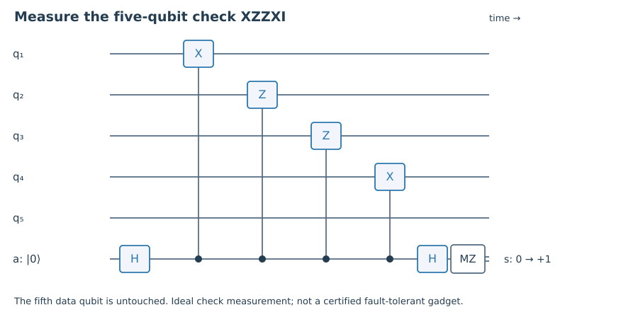

1. Quick check §
How many dimensions remain for n=7 and r=6 independent checks?
Hint 1
Use the trace of the code projector.
Worked solution
The code dimension is 2, corresponding to one logical qubit.
Chapter 03 · Draft lesson
Can we specify a large quantum code by a small list of measurable constraints?
Starting point: Chapters 1–2; Pauli matrices and commutation.
Anchor example: The [[5,1,3]] code specified by four cyclic Pauli checks.
Method: Describe a code as a simultaneous +1 eigenspace and compute syndromes by anticommutation.
Watch for: Independent commuting checks must exclude −I, or their common +1 eigenspace is empty.
This lesson includes explanations, worked examples, and problems with solutions. Advanced results whose proofs are outside the chapter are identified explicitly.
Writing every codeword explicitly becomes awkward as a code grows. Our first code suggests a better description: instead of listing its states, list constraints that every valid state satisfies. Both |000⟩ and |111⟩ have even neighboring parity, and so does every superposition of them. Could a short list of such checks define codes that protect against all Pauli errors?
A Pauli string is a tensor product of I,X,Y,Z, together with a phase. Two Pauli strings commute or anticommute. At a position where their nonidentity factors are different, exchanging them contributes a minus sign. Count such positions: an even number gives commutation, an odd number gives anticommutation.
Choose independent commuting Hermitian Pauli strings g₁,…,gᵣ whose generated group does not contain −I. Define the code by gⱼ|ψ⟩=|ψ⟩ for every j. The generated group S is its stabilizer. Anticommuting checks cannot share a nonzero eigenvector: if X and Z both fixed |ψ⟩, then XZ|ψ⟩ would equal |ψ⟩, while ZX=−XZ would force it to equal −|ψ⟩.
The projector onto the code is \(P=\prod_{j=1}^r(I+g_j)/2\). Each factor selects a +1 eigenspace, and commutation makes their product a projector. Expanding the product yields \(P=2^{-r}\sum_{g\in S}g\). Every nonidentity Pauli string has trace zero; independence and exclusion of −I leave one identity term. Thus \(\tr P=2^{n-r}\): the code contains k=n−r logical qubits.
This trace argument explains why independence matters. Adding a redundant generator does not halve the dimension again. For the repetition code, Z₁Z₃ is the product of the two existing checks; it supplies no new independent constraint. Keeping track of algebraic dependencies is essential when we later count checks on a surface.
Worked check 3.1. How many logical qubits remain with four independent stabilizer generators on five physical qubits?
The code dimension is 2^(5−4)=2, so it encodes one logical qubit. This count assumes all generators commute and −I is absent.
If |ψ⟩ is in the code and E is a Pauli error, then gⱼE|ψ⟩ equals either +E|ψ⟩ or −E|ψ⟩. The sign depends only on whether E commutes or anticommutes with gⱼ. It does not depend on the logical state. Our syndrome bit sⱼ is zero in the commuting case and one in the anticommuting case.
This makes a large calculation surprisingly small. Instead of applying E to every possible encoded superposition, compare E with the generators. For the repetition code, X₂ anticommutes with both Z₁Z₂ and Z₂Z₃, giving syndrome 11 immediately. Y₂ has the same syndrome, because its X component produces the same parity changes. The code cannot distinguish the accompanying phase error, which is exactly its weakness.
For automated calculations, ignore an overall Pauli phase and represent a string by binary vectors (x|z): I maps to (0,0), X to (1,0), Z to (0,1), and Y to (1,1). The commutation sign of two strings is
\[(-1)^{x\cdot z'+z\cdot x'},\]with dot products modulo two. This binary representation records commutation, not the full multiplication phase. If a calculation needs the sign of a product as an operator, it must track that phase separately. The simplification is useful precisely because syndrome calculations depend only on commutation.
Worked check 3.2. Do X₁X₂ and Z₁Z₂ commute? What about X₁X₂ and Z₂Z₃?
The first pair has two anticommuting overlaps, so the two minus signs cancel. The second has only one overlap, at qubit 2, and anticommutes.
Consider five qubits with generators
\[g_1=XZZXI,\quad g_2=IXZZX,\quad g_3=XIXZZ,\quad g_4=ZXIXZ.\]Check a pair, such as g₁ and g₂. They have two positions with different nonidentity factors, hence commute. The same count works for the other pairs; the four generators are independent. Their common +1 space therefore encodes one logical qubit.
Now compute single-qubit syndromes in generator order. X₁ anticommutes only with g₄, giving 0001. Z₁ anticommutes with g₁ and g₃, giving 1010. Y₁ anticommutes wherever exactly one of X₁ and Z₁ does, giving 1011. Repeating this for all five positions gives fifteen distinct nonzero four-bit syndromes. They exhaust the fifteen available nonzero strings.
Each single-qubit Pauli therefore has a distinct syndrome, separate from identity. The products of distinct members of {I and all single-qubit Paulis} have nonzero syndrome and compress to zero on the code. Their diagonal products are identity. The Knill–Laflamme test consequently proves correction of that error span, including arbitrary noise on one unknown physical position.
The code is conventionally written [[5,1,3]]: five physical qubits, one logical qubit, and distance three. The next chapters explain the distance entry and how logical operations hide among strings with zero syndrome. The stabilizer formalism gives a systematic language for these constructions; here the syndrome calculation supplies a directly checkable certificate for the single-error claim.

Worked check 3.3. What syndrome does X₂ have in this generator order?
The second factors of the four generators are Z, X, I, and X. Only the first anticommutes with X, so X₂ has syndrome 1000. Keeping the physical-position order fixed avoids confusing this with the syndrome of Z₁, which is 1010.
These exercises draw on the whole chapter. Attempt each question before opening a hint, explain your reasoning, then compare it with the worked solution.
How many dimensions remain for n=7 and r=6 independent checks?
Use the trace of the code projector.
The code dimension is 2, corresponding to one logical qubit.
Why can −I not belong to a stabilizer?
Apply the +1 eigenvalue requirement.
It would require −|ψ⟩=|ψ⟩, forcing |ψ⟩=0. There would be no physical code state.
Find the binary vector of XIZY.
Record X and Z components independently.
In order, x=(1,0,0,1) and z=(0,0,1,1). The Y factor contributes to both vectors.
Compute the syndrome of Z₁ for the five-qubit generators.
List the first factor of each generator.
The factors are X,I,X,Z, so Z₁ anticommutes with the first and third: syndrome 1010.
Compute the syndrome of Y₁.
Add the syndromes of X₁ and Z₁ modulo two.
0001+1010=1011. Overall phases do not affect syndrome.
Show that Z₁Z₃ is redundant in the repetition code.
Multiply its two generators.
(Z₁Z₂)(Z₂Z₃)=Z₁Z₃ because Z₂²=I. It does not add an independent constraint or change the code dimension.
Explain why an error anticommuting with a stabilizer has PEP=0.
Insert the stabilizer on both sides of the compressed operator.
Since Pg=P and gP=P, PEP=PgEgP=−PEP. Therefore the compression vanishes.
Does zero syndrome mean no physical error happened?
Consider a stabilizer string.
No. A nonidentity stabilizer acts trivially on the code and has zero syndrome. A nontrivial logical operator can also have zero syndrome, with a harmful action.
Does the binary Pauli vector retain the overall sign?
Compare X and −X.
No. They have the same vector and commutation relations. Algorithms requiring multiplication phases must store those separately.
How would you verify that all fifteen single-qubit syndromes are different?
Enumerate positions and Pauli labels.
For each position and each of X,Y,Z, compute its four commutation bits and insert the tuple in a set. Verify no tuple is zero and the set has size fifteen. The supplied verifier performs this finite certificate.